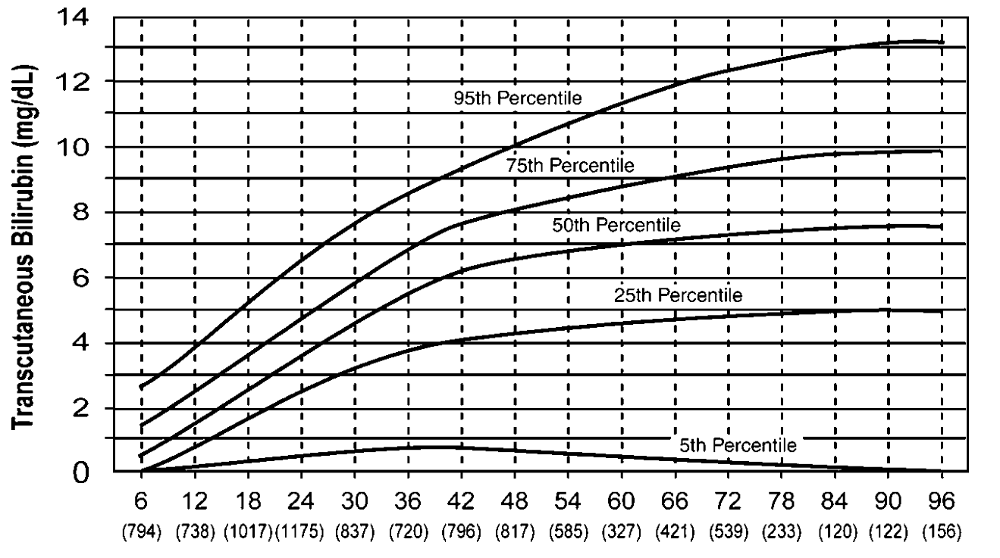

Neonatologia e recém-nascidos
Icterícia
Causas:
- Poliglobulia natural da hipóxia uterina;
- Meia vida curta por ser Hb-fetal;
- Ordenha incorreta ou excessiva de cordão no sentido fetal;
- Baixa captação hepática de bilirrubina, principalmente nos prematuros;
- Baixa concentração de enzimas conjugadoras de bilirrubina direta para eliminação;
- Lenta excreção por atividade intestinal; e
- Alta concentração de beta-glucuronidases que promovem a bilirrubina indireta.
Classificações
- Valores séricos normais até 13.
- Antes de 24h é sempre precoce1.
- A fisiológica é tardia, sempre após 36h.
- É prolongada se dura mais de 15 dias.
Valores
- Acima de 5 é visível ao olho nu.
Zonas de Kramer
- 4 a 8mg/dL : cabeça e pescoço;
- 5 a 12mg/dL : até cicatriz umbilical;
- 8 a 16.5mg/dL : até joelhos;
- 11 a 18mg/dL : braços e pernas até punho e tornozelos; e
- 15mg/dL ou mais : pés e mãos.
A partir de zona 3, o valor de bilirrubina pode exceder o fisiológico e está formalmente indicada a investigação com bilirrubinômetro ou sérica direta.
Fatores de risco
- Prematuriedade – antes das 37 e 39 semanas – e pós-datismo;
Encefalopatia bilirrubínica
- Déficits neurológicos, principalmente auditivo;
- Quase irreversível.
Bilirrubinômetro
- Alto valor preditivo.
Conduta
Investigar sempre que zona de Kramer acima de 3, fatores de risco presentes, antes de 36h ou recém-nascido sem ganho de peso.
Investigação
- Hemograma: bilirrubinemia,
O fator Rhesus torna mais grave a incompatibilidade sanguínea porque o antígeno é exclusivamente apresentado nas hemoglobinas, já os antígenos AB estão presentes em outros tecidos, diluindo o efeito e avidez das imunoglobulinas.

Nomograma de Maisel
Exame físico abdominal para investigar visceromegalias.
Fototerapia.
Na ocasião da alta, orientar sobre as zonas 3 em diante de Kramer.
Notas
- As referências divergem mas é consenso que antes das 24h se trata de icterícia precoce.